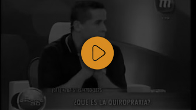
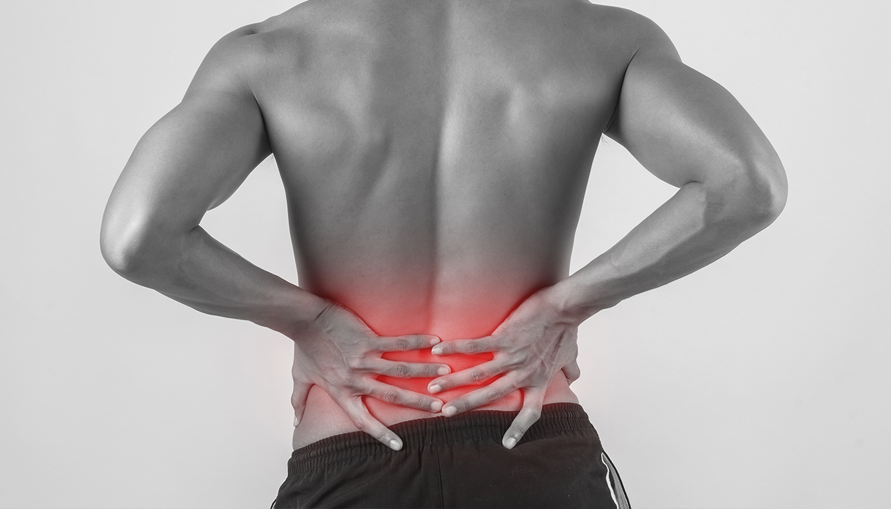
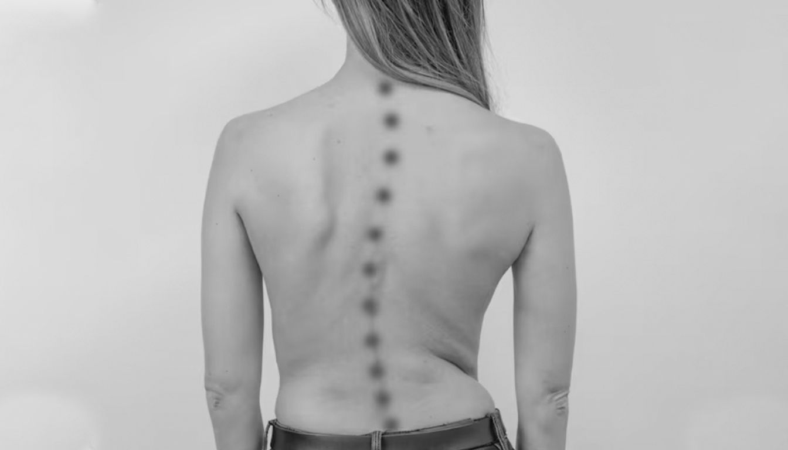
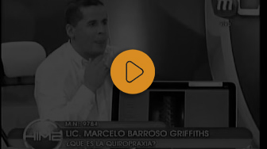
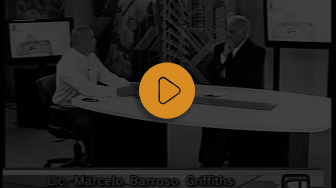

Entrevista en canal Magazine
¿Qué es la quiropraxia?

“Lo que pensamos repercute en todo nuestro organismo. Cuando los malestares aparecen, la quiropraxia ofrece un camino más allá de los medicamentos.”-Diario "El Día"
Leer nota“Conocer el tipo de pisada es clave para prevenir dolores en espalda, rodillas, talones y pies en quienes practican running o caminata.”-Revista "Parati"
Leer nota“Los vicios posturales y movimientos inadecuados afectan la columna; reconocerlos ayuda a prevenir dolores y molestias.”-Revista "Mia"
Leer nota
“La hernia de disco afecta los cartílagos entre las vértebras; la quiropraxia ofrece una alternativa para aliviar el dolor.”-Revista "Mia"
Leer nota
“La escoliosis es una desviación lateral de la columna que puede afectar la salud integral; la quiropraxia ofrece una alternativa de tratamiento.”-Revista "Mia"
Leer nota“El frío favorece contracturas musculares y rigidez articular; la quiropraxia ayuda a tratarlas al corregir subluxaciones de la columna.”-Diario "La Prensa"
Leer nota¿Qué es la quiropraxia?

¿Qué es la quiropraxia? (segunda parte)

Hábitos posturales que afectan la columna
Quiropraxia y estrés en época de vacaciones
